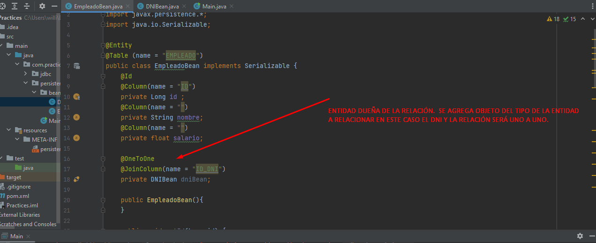
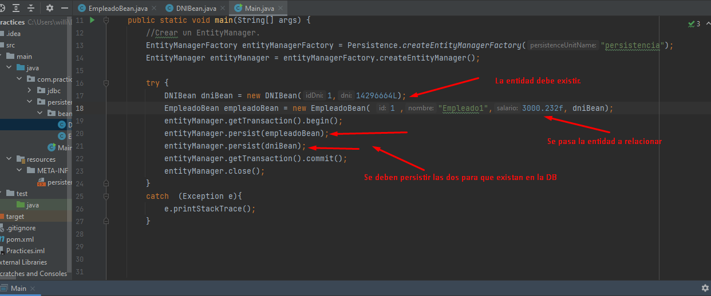

Conceptos Básicos
Conocido como el java pesistence application, sirve para trabajar con base de datos de una forma mas limpia.


Configuración
Ya que JPA solo es la interface que ofrece java para trabajar persistencia con base de datos, es necesario tener un proveedor de persistencia como HIBERNET, para ello descargamos la depencia de hibernet-core y el jdbc connector para que hibernet pueda gestionar la conexión con base de datos

Con las depencias instaladas se debe agregar el archivo persistence.xml en el path del proyecto que es en la carpeta resources, este archivo lleva las etiquetas necesarias para que el proveedor jpa pueda interactual con la base datos.

Crear entidad y clase bean.
Para crear una entidad basta con crear una clase de tipo bean ('Clase sin lógica') con sus setter y getter, agregar un constructor vacío y las anotaciones correpondiente a Entity, table, column, id.
Indice auto-incrementado.
Para incrementar utilizar el auto-incremento y que sea Jpa quien gestione el mismo, basta con agregar la etiqueta @GeneratedValue mas la estratégia a utilizar.
Persistiendo, mergeando y encontrado entidades.
Para persistir entidades se utiliza el método persist, que no devuelve nada. Para actualizar 'update' información se busca primero por el Id de la entidad con el método find que devuelve una entidad auto-gestionada de ese objeto y cualquier cambio que se realice en el objeto se refleja en la entidad y en la base de datos. También se puede modificar un objeto 'detached', no esta en el constexto de entity', luego mediante el entity manager realizar un merge con la entidad y la DB. Luego de cerrar el entity manager ya se podrá realizar ninguna acción sobre la entidad
begin transaction y commit van juntas y asegura que la acción sobre la DB se realice correctamente, si no aplica el rollback automático.
Remover entidades.
Para remover una entidad basta con utilizar el metodo remove y pasar la entidad a eliminar. Tener encuenta que la entidad debe no puede estar detach, se carga con find o merge.
Crear query hql.
Para crear una query se utiliza el entity y se pide create query, en ella se puede parametrizar con ? o directamente con etiquetas ':parametro'. luego se setean los parámetro, se pide una lista con los resultados de las entidades encontradas.
Relación one to one.
Para relacionar una entidad uno a uno, se debe agregar un objeto de la entidad relacionada en la entidad dueña con la anotación oneToOne y luego la anotacióno JoinColumn con el nombre que se dará a la columna que se creará como llave foránea.
La primer forma de crear objetos desde esta relación y sus entidades es crear cada objeto por separado y persistir cada uno, asegurando que para el id dado existe un registro en la tabla a relacionar.
La segunda es utilizando la estrategia de cascada que logra persistir auotomaticamente los datos, para esto se debe agregar al anotación one to one el atributo cacade={} .
Crear criteria query between.
Los criteria se utilizan para abstraer un poco mas el código y no usar sentencias sql, nada más código java.
Colecciones y enumeraciones en los Beans
Las collections agregan una tabla automaticamente con la foreing key correspondiente, y las enumeraciones agregar una nueva columna en la tabla que representa el Bean.